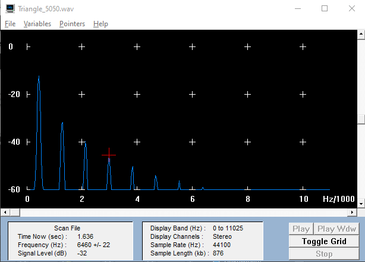
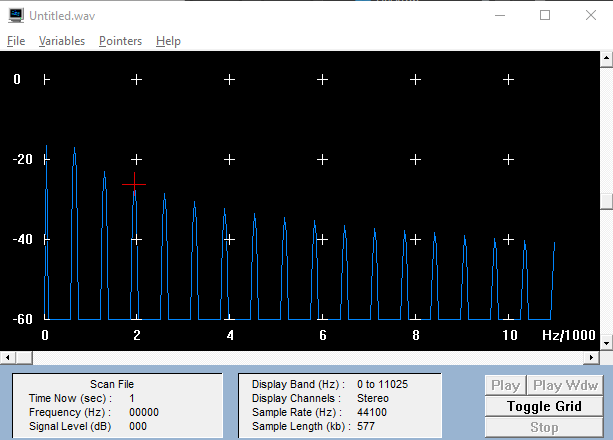
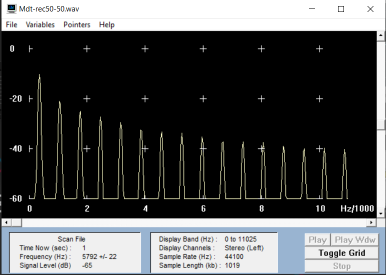
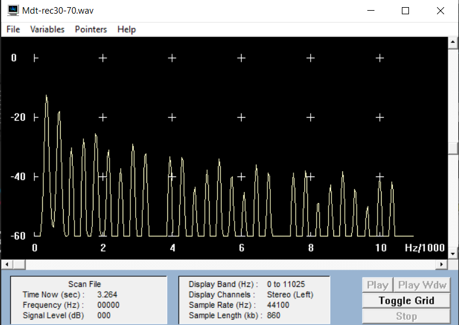
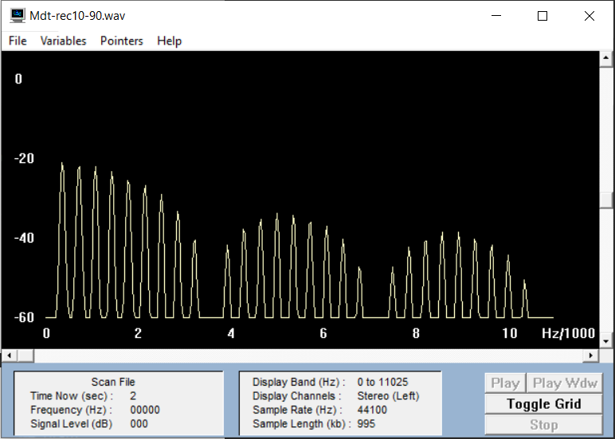

Außerdem lässt sich in GRAM oder Praat das Spektrum anzeigen. In GRAM wählen wird den Display-Type "Line". Es erscheint eine Liniendarstellung des Amplitudenspektrums mit dB-Angaben (Toggle Grid). Aus diesen können wir dann lineare Prozentwerte mit Bezug auf die Grundschwingung berechnen. Wir setzen dazu die Amplitude der Grundschwingung mit 0 dB entsprechend 100 % an. Bei der Square-Welle variieren wir die Pulsweite, d.h. das zeitliche Verhältnis zwischen positivem und negativem Schwingungsteil, mit dem Regler P-WIDTH am Oszillator) und beobachten, wie sich das Verhältnis der Obertöne verändert. Dazu betrachten wir drei Fälle: 50/50, 30/70 und 10/90 zwischen positivem und negativem Teil, ablesbar am Oszilloskop.
Dreiecksschwingung GRAM
Dreiecksschwingung
| Ton | Frequenz (in Hz) | Amplitude (in dB) | Differenz (in dB) |
Linearisiertert Wert |
|---|---|---|---|---|
| Grundton | 431 | -12 | 0 | 100% |
| 1. Oberton |
1292 | -32 | -20 | 10% |
| 2. Oberton | 2110 | -40 | -28 | 3,98% |
| 3. Oberton | 2972 | -46 | -34 | 2% |
.WAV Datei
Sägezahnsschwingung GRAM
Sägezahnsschwingung
| Ton | Frequenz (in Hz) | Amplitude (in dB) | Differenz (in dB) |
Linearisiertert Wert |
|---|---|---|---|---|
| Grundton | 65 | -16 | 0 | 100% |
| 1. Oberton |
668 | -17 | -1 | 89,13% |
| 2. Oberton | 1314 | -23 | -7 | 44,67% |
| 3. Oberton | 1938 | -26 | -10 | 31.62% |
.WAV Datei
Rechteckschwingung 50/50 GRAM
Rechteckschwingung 50/50
| Ton | Frequenz (in Hz) | Amplitude (in dB) | Differenz (in dB) |
Linearisiertert Wert |
|---|---|---|---|---|
| Grundton | 345 | -11 | 0 | 100% |
| 1. Oberton |
1034 | -22 | -11 | 28,1% |
| 2. Oberton | 1744 | -26 | -15 | 17,7% |
| 3. Oberton | 2433 | -28 | -17 | 14,1% |
.WAV Datei
Rechteckschwingung 30/70 GRAM
Rechteckschwingung 30/70
| Ton | Frequenz (in Hz) | Amplitude (in dB) | Differenz (in dB) |
Linearisiertert Wert |
|---|---|---|---|---|
| Grundton | 345 | -14 | 0 | 100% |
| 1. Oberton |
689 | -19 | -5 | 56,2% |
| 2. Oberton | 1055 | -32 | -18 | 12,5% |
| 3. Oberton | 1400 | -28 | -14 | 19,9% |
.WAV Datei
Rechteckschwingung 10/90 GRAM
Rechteckschwingung 10/90
| Ton | Frequenz (in Hz) | Amplitude (in dB) | Differenz -(in dB) |
Linearisiertert Wert |
|---|---|---|---|---|
| Grundton | 366 | -22 | 0 | 100% |
| 1. Oberton |
732 | -23 | -1 | 89,1% |
| 2. Oberton | 1055 | -23 |
-1 | 89,1% |
| 3. Oberton | 1421 | -24 | -2 | 79,4% |
.WAV Datei